1. The Iron Lady
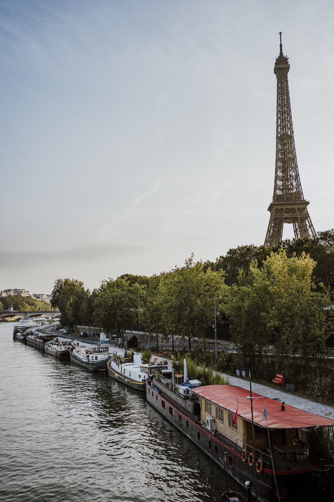
This first reason may seem incredibly cliche but I absolutely adored the Eiffel Tower. We only saw it from the ground, but that was more than enought for us. I knew it was tall but didn't reaize how tall until I was standing underneath it. I love being next to something, whether a monument or a vista, and realizing just how small you are in the grand scheme of the world.
After sunset, the Eiffel Tower sparkles at the top of the hour for 5 minutes. Having a 3 year old, staying up late is sort of hard for us as of late....so when we realized sunset wasn't until almost 10pm, we knew we woudld need to see this at least once on our trip! We had a late dinner, walked around Rue Cler and got gelato, and enjoyed the beautiful weather, only to realize it was almost 9:55! I don't think we had ran that fast since highschool gym class. Fortunately, Rue Cler is nearby so it wasn't a long run. We made it just in time and savored that beautiful moment alongside the crowd in the Champs de Mars. (I also take pride in somehow managing to not spill any of my gelato.)
2. Parisian Breakfasts
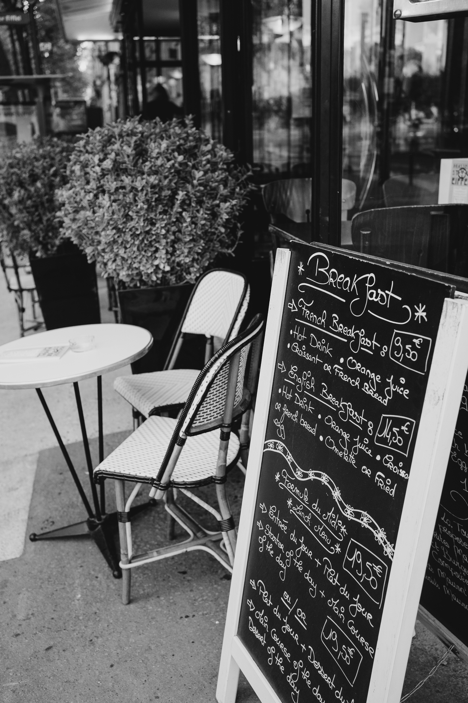 Coffee, orange juice, fresh baked croissant, and baguette with butter and jam? Oui, s'il vous plaît! Enough said.
3. Cafes
Cafe culture in Paris is serious business. You can literally spend half the day at one cafe, drinking coffee, reading, or just people watching, and you are never made to feel like you're taking up a table or have to rush through your meal. The French sure do know how to cook and bake, so that also helps you sit and enjoy your time while having a meal or tasty treat.
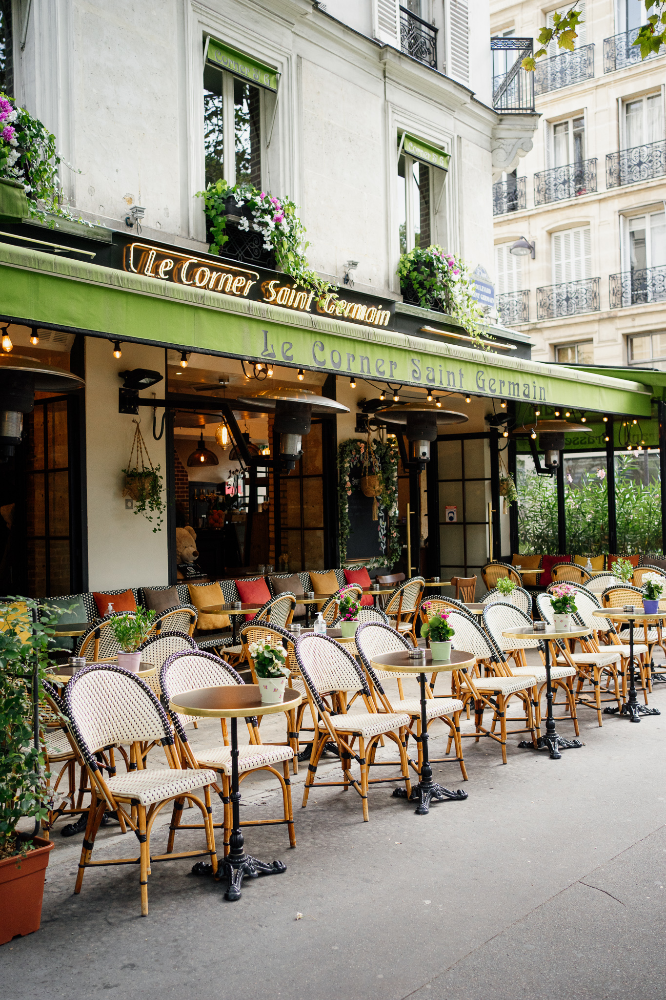 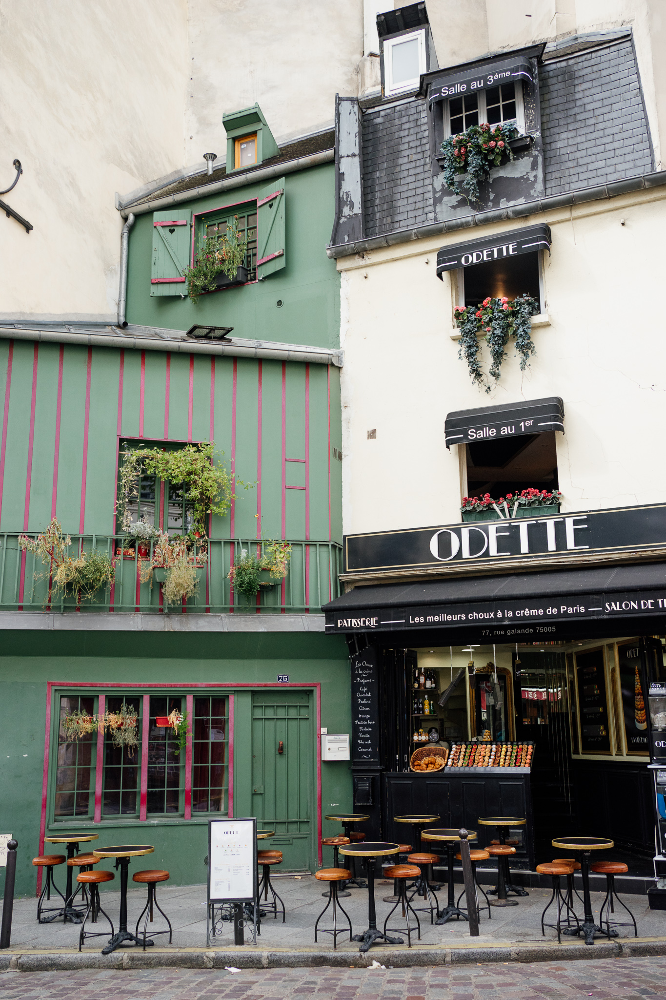4. Architecture
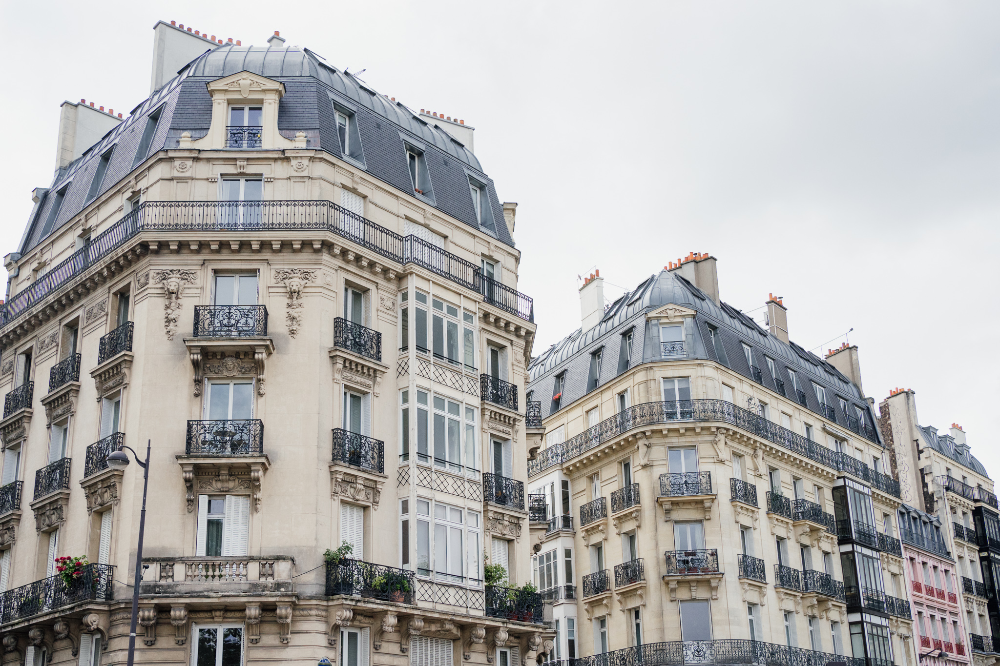 I absolutely adored all of the different architecture throughout Paris, but was obsessed with the classic Parisian apartment buildings. The cream colored exterior, large windows, balconies, window boxes - I could stare at them all day. I'm honestly surprised I didn't accidently walk into traffic, with how much I looked up while walking.
5. Doors
Like the architecture, I was also obsessed with the doors of Paris. No two were alike and each had beautiful details, from the bright colors to the stone carvings. And the height of these doors! I've seen photos of the doors but didn't realize just how large they were. Some are entrances to underground parking garages, so that should tell you all you need to know about the size.
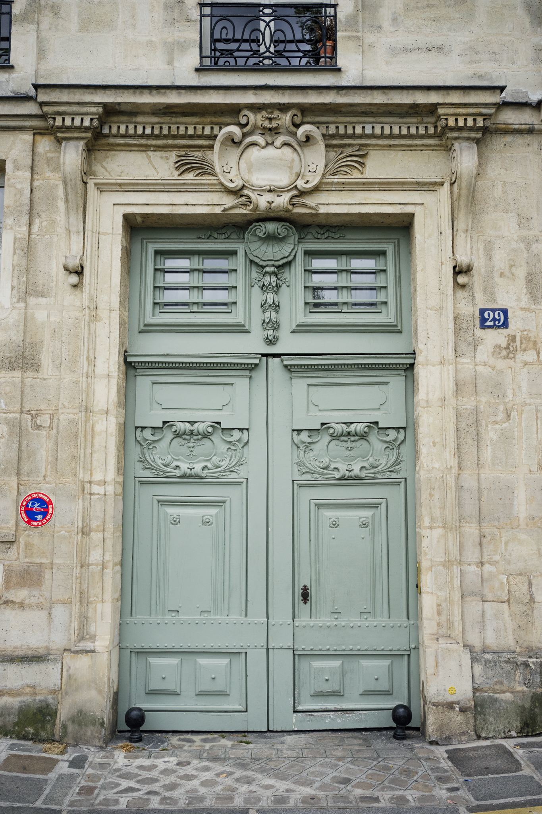 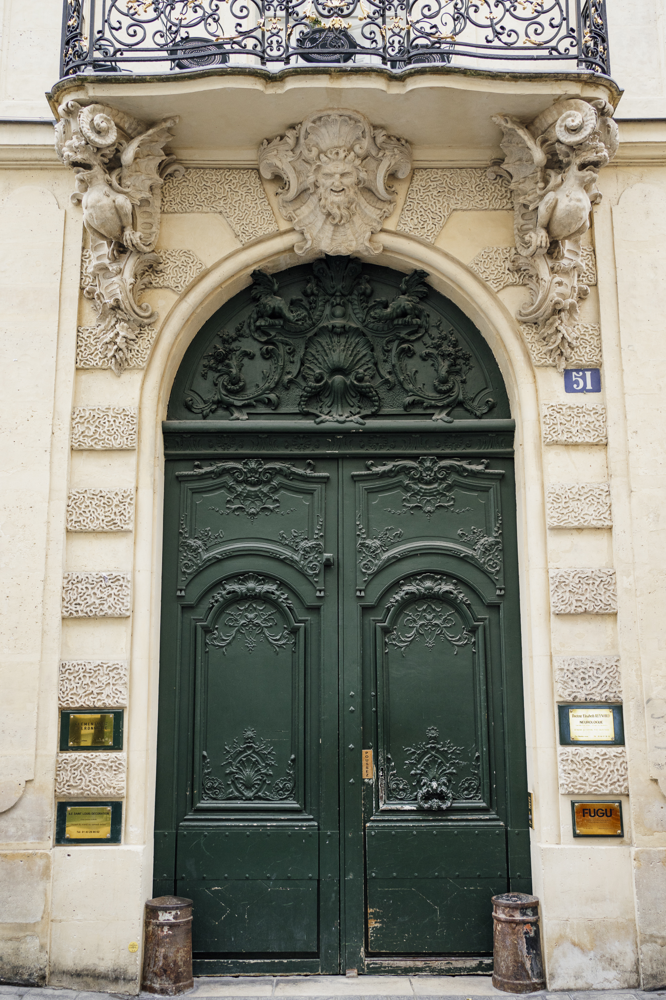 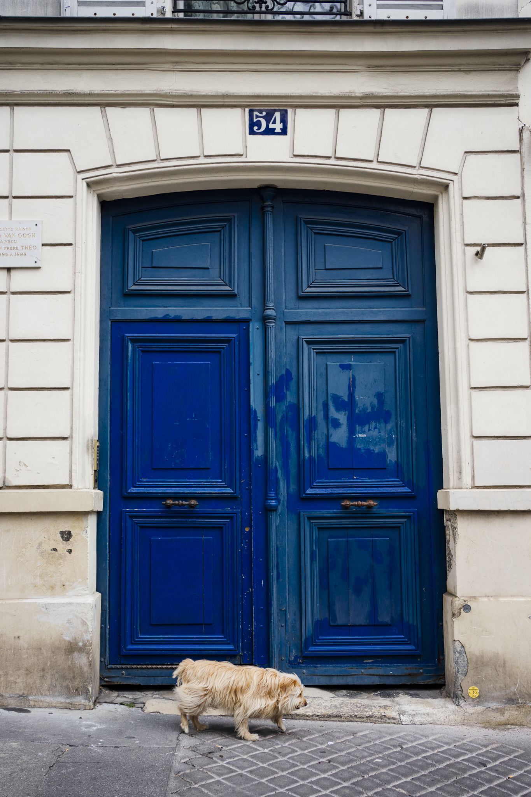6. The Bouquinistes of Paris
These vendors have been along the Seine river for hundreds of years. You can find an array of used and antiquarian books, as well as wonderful artwork and prints to bring home as a souvenier or gift. We purchased two hand drawn prints for our home, as well as watercolor prints and old comic books for friends and family. You could spend hours browsing each of the stalls for a hidden treasure.
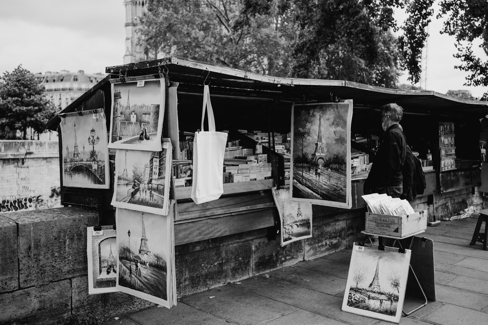 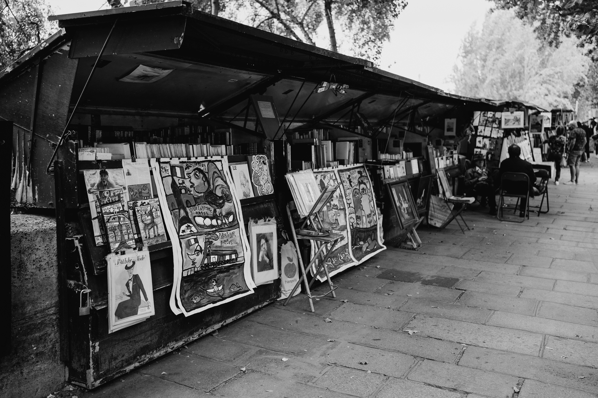7. Montmartre
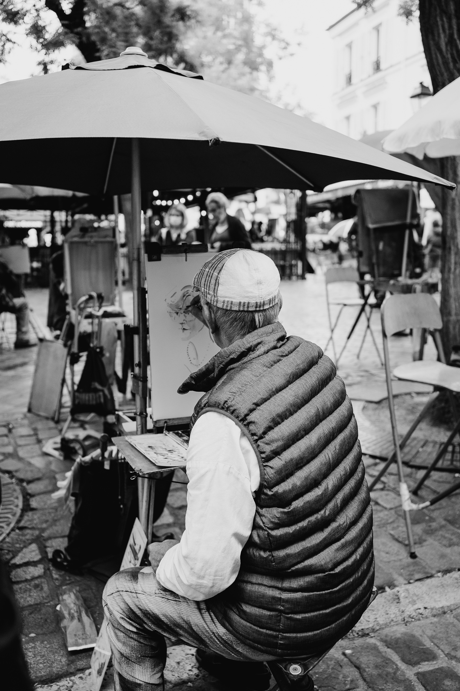
Montmartre is, by far, the most charming arrondissement in all of Paris. If you took away some of the modern fixtures and shops, you could believe you were in Paris at the same time as Hemingway. The winding, cobblestone streets add to its charm and it's easy to get lost wandering around. This neighborhood sits on a hill, so there are some incredible views of Paris.
There are plenty of hidden gems to find throughout the neighborhood. From the "I love you" mural near the metro to the beautiful residential streets found off the main road, there is so much to explore and look at. In Place du Tetre, you will find artists throughout the square who are drawing, painting, and even commissioning portraits.
Photography is a longtime passion of mine. I love traveling to new places, where I always look for the small details and try to capture the essence of what makes that location special.